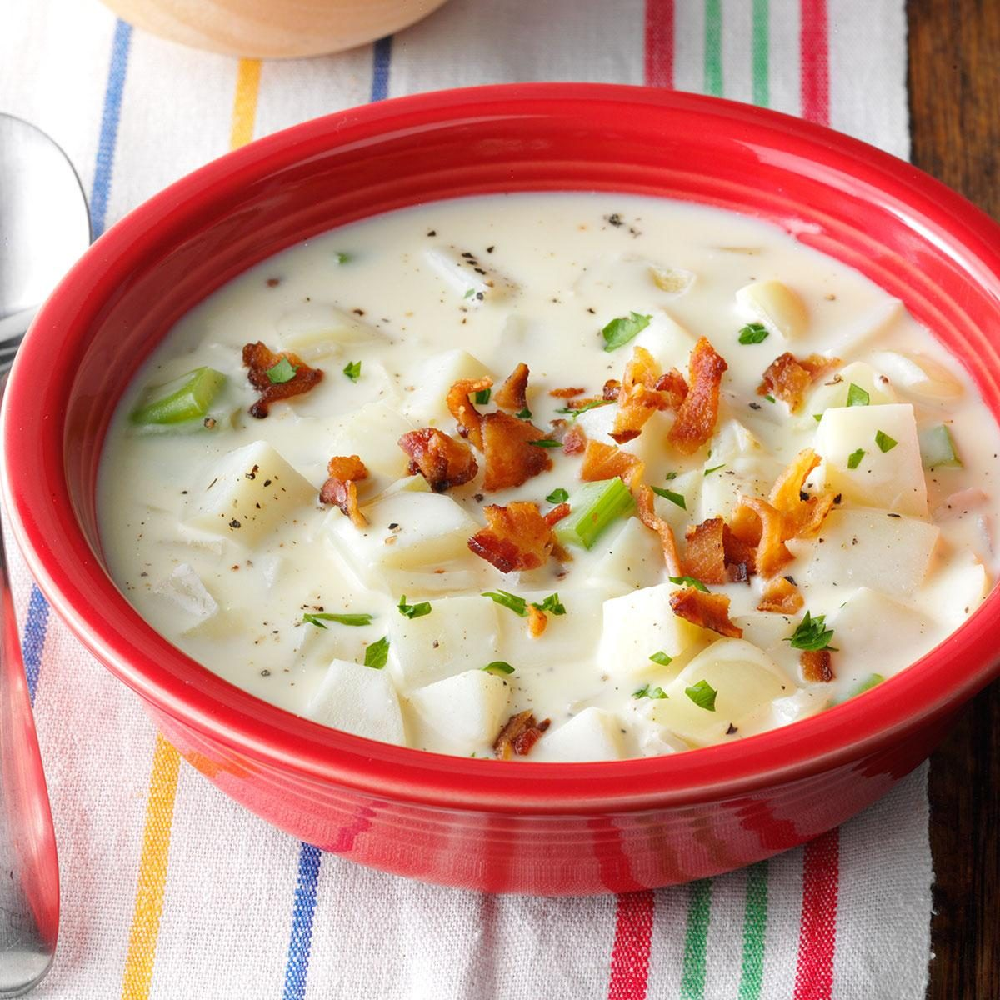

Potato Chowder
Ingredients:
- (8 cups) Diced potatoes
- (3 cans) Chicken broth
- (1 can) Condensed cream of chicken soup, undiluted
- (1/3 cup) Chopped onion
- (1/4 teaspoon) Pepper
- (8 ounces) Cream Cheese, cubed and softened
- (1/2 pound) Sliced bacon, cooked and crumbled, optional
- Minced chives, optional
Steps:
- In a 5-quart slow cooker, combine the first 5 ingredients. Cover and cook on low for 8-10 hours or until potatoes are tender.
- Add cream cheese; stir until blended. Garnish with bacon and chives if desired.